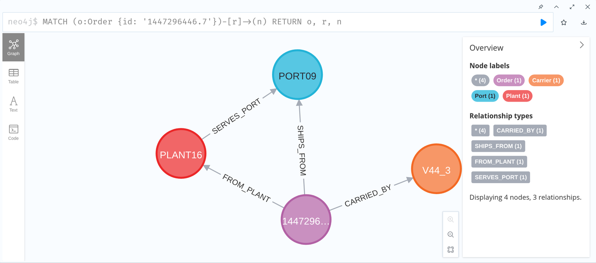
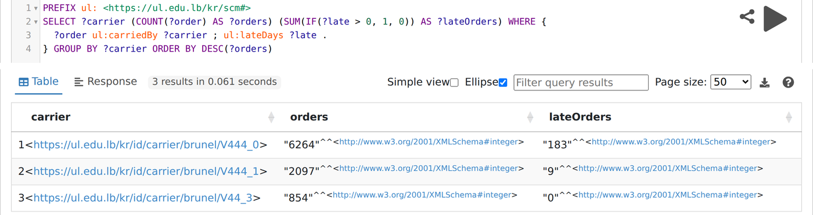

Last week you measured Brunel's tables. Today they become a graph of 135,841 statements, and you ask it questions that follow links.
Rebuilt on 2026-09-24 to the course standard (AGENTS.md 2c). Every number and every code sample is real output of the lab scripts in demos/session-02-rdf-sparql/, recorded in its reference-outputs/ and sample/ folders.
docker compose up -d from demos/ on every laptop. Fuseki and Neo4j take a minute to start.Brunel's seven tables, profiled, and a constraint inventory. For example: a plant ships only through ports it is linked to, 0 exceptions in 9,215 orders.
The tables still do not join to anything outside themselves, and the rules live in a spreadsheet. A graph gives every thing a name the whole world can point at.
Three minutes. Point at the ring on "Graph": this session's stage. Remind them the plant and port rule from last week comes back today as a one line question.
By the end you can turn a table into triples, design names that survive a second source, and ask a graph questions that follow links.
A graph of Brunel you can query, three queries you wrote yourself, and a naming scheme sketched for your own project. Nothing to hand in.
| Part | Minutes |
|---|---|
| 1 · From a table row to triples | 30 |
| 2 · Naming things: IRI design | 8 |
| 3 · RDFS, the first meaning | 12 |
| 4 · Asking questions: SPARQL | 34 |
| 5 · RDF against the property graph | 10 |
| Lab | 60 |
| Discussion and wrap | 15 |
Two minutes. Say it plainly: the lab is not graded; it is where the concepts become real and where the team project starts. One query in the set is slow on purpose.
One real Brunel order, taken apart into statements, one step at a time.
Ten seconds. Read the question, let it hang, move on.
Three minutes. The idea to land: in a graph, joining is not an operation you run, it is a consequence of using the same name.
<https://ul.edu.lb/kr/id/order/brunel/1447296446.7>
<https://ul.edu.lb/kr/scm#fromPlant>
<https://ul.edu.lb/kr/id/plant/brunel/PLANT16> .RDF: Resource Description Framework: a graph written as a list of three part statements.
Triple: one statement: subject, predicate, object. One edge of the graph.
Four minutes. Our whole Brunel graph is 135,841 of these, and nothing else. Tables, columns and keys are gone; only statements remain.
@prefix ul: <https://ul.edu.lb/kr/scm#> .
@prefix order: <https://ul.edu.lb/kr/id/order/brunel/> .
order:1447296446.7 ul:fromPlant plant:PLANT16 .IRI: Internationalised Resource Identifier: a globally unique name, written like a web address.
Namespace: the shared first part of a group of IRIs.
Prefix: a short nickname for a namespace, such as ul:.
Four minutes. Two namespaces on purpose: ul: (ending in #) for the words, classes and properties; https://ul.edu.lb/kr/id/ (ending in /) for the things. Part 2 argues why.
| Brunel column | Value in brunel.ttl | Datatype |
|---|---|---|
| Order Date | "2013-05-26" | xsd:date |
| Unit quantity | 808 | xsd:integer |
| Weight | 14.3 | xsd:decimal |
| Service Level | "CRF" | plain text |
| Order ID | "1447296446.7" | plain text, on purpose |
Literal: a plain value in a triple: a number, a date, a piece of text.
Datatype: the kind of a literal, such as integer or date.
Read as a number, 1447296446.7 is a decimal to be rounded and summed. It is a name. Text keeps it exact.
Three minutes. The datatype decides what comparisons mean: 14.3 as a decimal sorts after 9.5; as text it sorts before. Q6 later compares weights, so this matters.
convert_to_rdf.py does 9,215 times.Five minutes. Step slowly; this is the lab's conversion, drawn. Not every column is shown: the file has 13 triples for this order, including the destination port and product.
Three minutes. 173 is real: the orders from PLANT16 in OrderList. The price: if two systems use the same code for different things, a shared IRI merges them wrongly. That is why the source system is part of our IRIs.
[] a ul:RateBand ;
ul:bandCarrier carrier:V444_6 ;
ul:bandFrom port:PORT08 ; ul:bandTo port:PORT09 ;
ul:bandService "DTD" ;
ul:minWeight 250.0 ; ul:maxWeight 499.99 ;
ul:rate 0.7132 .Blank node: a node with no global name, for something that matters only through its links.
1,540 rate bands, all blank nodes, 12,320 triples.
Three minutes. The cost of a blank node: nobody outside can point at it; to say "this band is wrong", it needs an IRI. [] is Turtle's way to write a blank node inline. Ask: should rate bands have IRIs? A good answer: yes, if anything outside will ever refer to one, for example a contract.
| Named graph in brunel.trig | Triples |
|---|---|
| .../graph/brunel/OrderList | 119,844 |
| .../graph/brunel/FreightRates | 12,320 |
| .../graph/brunel/ProductsPerPlant | 3,576 |
| .../graph/brunel/PlantPorts | 52 |
| .../graph/brunel/schema | 49 |
Named graph: a set of triples with its own IRI, used to track where they came from.
When two sources disagree, you must know which one said what. The graph name is that record.
Three minutes. The query is SELECT ?g (COUNT(*) AS ?n) WHERE { GRAPH ?g { ?s ?p ?o } } GROUP BY ?g. It returns in 38 ms.
order:1447296446.7 a ul:Order ;
ul:fromPlant plant:PLANT16 ;
ul:weight 14.3 ;
ul:serviceLevel "CRF" .Authoring and reading.
<.../order/brunel/1447296446.7>
<...scm#weight>
"14.3"^^<...XMLSchema#decimal> .One triple per line: split, stream, load.
{ "@id": ".../order/brunel/1447296446.7",
"@type": "ul:Order",
"ul:serviceLevel": "CRF" }JSON that is also RDF.
Turtle: a compact, readable text format for triples.
N-Triples: one full triple per line, simple to process in bulk.
JSON-LD: triples written as JSON, used by web APIs.
Three minutes. The full files are in demos/session-02-rdf-sparql/sample/: order.ttl, order.nt, order.jsonld, all written by rdflib from the same 13 triples. IRIs are shortened with ... here only.
Three real ways to name a Brunel order. Two of them break.
Ten seconds. Read the question, let it hang, move on.
| Scheme | The IRI | It breaks when |
|---|---|---|
| Row number | .../order/1 | The file is sorted differently, or a row is deleted. Every name shifts. |
| Key only | .../order/1447296446.7 | A second system also has an order 1447296446.7. Two different orders, one name. |
| Kind, source, key | .../order/brunel/1447296446.7 | Survives both. A second source gets its own space. |
One IRI per real thing, not per row, and not one per string that looks alike. Two systems' orders get two IRIs; deciding they are the same is a Session 5 decision, with evidence.
Four minutes. The silent failure is the second one: it does not collide loudly, it merges two orders into one and nobody notices.
ul: (ends in #) for classes and properties. .../kr/id/ (ends in /) for things, so each can have its own web page later.VOCAB = "https://ul.edu.lb/kr/scm#"
DATA = "https://ul.edu.lb/kr/id/"
def order_iri(source, key):
return f"{DATA}order/{source}/{key}"Three minutes. This is the course convention (AGENTS 2d). The closing discussion tests it, and each student sketches the same kind of scheme for their own project data.
A small schema, written as triples too, and the first surprise: it concludes instead of checking.
Ten seconds. Read the question, let it hang, move on.
rdf:type: the predicate that says what class a thing belongs to (written a).
RDFS: RDF Schema: the first vocabulary for classes and properties: subclass, domain, range, label.
Four minutes. The schema is 49 triples in its own named graph. Nothing new to install: it is data, queried with the same SPARQL.
Real run: rdfs_entailment_demo.py, rdflib with owlrl, 2.6 seconds.
Entailment: a fact that follows from stated facts and rules, even though nobody wrote it down.
Constraint: a rule data must obey; breaking it is reported as an error. That is Session 4.
Five minutes, and protect them. Everyone from SQL expects an error at step 3. The shock is the lesson: domain and range are not checks. Session 4 (SHACL) is where checks live.
The schema says the domain of ul:carriedBy is ul:Order. A port is given a carrier by mistake. What does an RDFS reasoner do?
Inference adds facts; validation refuses data. Never use one for the other's job.
Forty seconds. If most pick a, good: that is the SQL instinct, and it is now visible.
Draw the shape of the answer, with holes in it. Every result on these slides is a real run on our 135,841 triples.
Ten seconds. Read the question, let it hang, move on.
PREFIX ul: <https://ul.edu.lb/kr/scm#>
SELECT (COUNT(*) AS ?n) WHERE {
?order ul:carriedBy carrier:V44_3 .
}SPARQL: the query language for RDF graphs.
Triple pattern: a triple with some parts replaced by variables.
Variable: a placeholder, written ?name, filled by every match.
Four minutes. The prefix carrier: is shortened on the slide; the file writes the full IRI. Real result on Fuseki: 854, the same number Session 1 found with pandas.
?order ul:carriedBy ?carrier ;
ul:lateDays ?late . # ; repeats the subject ?orderThree minutes. Point at the semicolon: it means "same subject". Students read it as a statement end; it is not.
SELECT ?carrier (COUNT(?band) AS ?bands) WHERE {
?carrier a ul:Carrier .
OPTIONAL { ?band ul:bandCarrier ?carrier }
} GROUP BY ?carrier ORDER BY ?bands| ?carrier | ?bands |
|---|---|
| V44_3 | 0 |
| V444_0 | 39 |
| V444_1 | 292 |
V44_3 would vanish from the result, and the finding with it. OPTIONAL is how a missing link stays visible.
Three minutes. This is Session 1's referential integrity finding, now one query. Remember open world: 0 bands in our graph means "none stated", not "none exist".
GROUP BY and COUNT turn matches into a table of totals.SELECT ?carrier (COUNT(?order) AS ?orders)
(SUM(IF(?late > 0, 1, 0)) AS ?lateOrders)
WHERE { ?order ul:carriedBy ?carrier ;
ul:lateDays ?late . }
GROUP BY ?carrier ORDER BY DESC(?orders)| Carrier | Orders | Late |
|---|---|---|
| V444_0 | 6,264 | 183 |
| V444_1 | 2,097 | 9 |
| V44_3 | 854 | 0 |
Aggregation: combining many matches into one number (a count, a sum, an average), grouped by something.
Three minutes. 183 plus 9 is 192, the late orders from the RDFS slide. Numbers that agree across slides are how students start to trust the graph.
| Form | Returns | Our real example |
|---|---|---|
| SELECT | A table | Q2: three carriers with their order counts |
| ASK | true or false | Q4: is any order leaving through a port its plant does not serve? false |
| CONSTRUCT | A new graph | Q7: carrier serves plant, 12 new triples built from 9,215 orders |
| DESCRIBE | Everything about a thing | Order 1447296446.7: 13 triples |
A query can also reach another endpoint with SERVICE <url> { ... }. We do not run it in the lab; know that it exists.
Three minutes. CONSTRUCT is the one to stress: a query whose answer is more graph. It is how Session 5 builds graphs from other graphs.
Property path: a shortcut to follow a relationship in sequence (/), one or more times (+), or zero or more times (*).
Four minutes. Session 1's sanction question, "which products contain a part from this plant, at any depth", is a + path. Brunel has no parts list, so the hierarchy example here is classes; Session 3 gives us part hierarchies.
SELECT (COUNT(?o) AS ?n) WHERE {
?o a/rdfs:subClassOf* ul:Order .
}WITH RECURSIVE sub(cls) AS (
SELECT 'Order'
UNION
SELECT c.child FROM class_parent c
JOIN sub ON c.parent = sub.cls )
SELECT COUNT(*) FROM orders o
JOIN sub ON o.type = sub.cls;Paths of unknown length, data from many sources with one set of names, and a schema you can query like data.
Fixed, well known tables, heavy arithmetic, and decades of tuning. For a monthly sales total, use SQL.
Three minutes. The SQL is an illustration of the shape (a recursive common table expression), not run in the lab. Be fair to SQL: this course does not claim graphs are always better.
| Q6 · orders in a rate band gap | Time (Oxigraph) | Answer |
|---|---|---|
FILTER NOT EXISTS, per order | 172 s | 1,370 |
One join, then GROUP BY | 2.3 s | 1,370 |
| Question | Fuseki | Oxigraph |
|---|---|---|
| Q2 aggregation | 47 ms | 20 ms |
| Q4 ASK with path | 84 ms | 23 ms |
| Q5 subclass path | 32 ms | 14 ms |
| Q6 band gap | 2,931 ms | 2,313 ms |
Why: NOT EXISTS reran the band search for each of 8,361 orders. The rewrite joins once, then counts. Same answer, 75 times faster.
Three minutes. Students see these timings themselves in the lab. Oxigraph runs inside Python, so it has no network cost; Fuseki answers over HTTP.
Real orders, weights rounded to 2 decimals. Try next: count orders per carrier with GROUP BY, or find orders leaving through a port their plant does not serve (OPTIONAL plus !bound). Ctrl+Enter runs.
Five minutes. The in-browser engine is small on purpose: no property paths, no UNION. For those, use Fuseki in the lab.
The same orders, loaded into both. The difference shows up in one question.
Ten seconds. Read the question, let it hang, move on.

MATCH (o:Order {id: '1447296446.7'})
-[r]->(n)
RETURN o, r, nProperty graph: nodes and edges that carry labels and properties, as in Neo4j.
Cypher: the query language of Neo4j: patterns drawn with brackets and arrows.
Four minutes. This is also the one slide for the Neo4j tool: the Browser is at localhost:7474 in the lab. Same four things and three links as the RDF picture in Part 1.
?o a/rdfs:subClassOf* ul:OrderAnswer 9,215. The fact that a late order is an order lives in the graph, once, for every query.
MATCH (o:Order) ... // 9,023
MATCH (o) WHERE o:Order OR o:LateOrder // 9,215A label is a string. Neo4j has no subclass, so every query must list the kinds itself.
| RDF gives you | The property graph gives you |
|---|---|
| Global names: graphs from two companies merge without a meeting | Properties on edges without extra ceremony |
| A schema you can query and reason over (RDFS, OWL, SHACL) | A friendlier query language, and wide industry use |
Three minutes. Real counts from neo4j_comparison.py. Be fair: Neo4j is excellent and common in industry. We use RDF because the next three sessions need a schema a machine can reason over, and the concepts carry over to property graphs, not the other way.
Three companies want one traceability graph: parts, plants, shipments, each company adding its own data. Which model fits better?
Two minutes. Ask one person who chose a to defend it; the defence is reasonable for a single team.
Convert with rdflib, load into Fuseki, query, then compare with Neo4j. Each student on their own machine.
Ten seconds. The lab clock starts on the next slide.
docker compose up -d, then convert_to_rdf.py, load_fuseki.py, run_queries.py, neo4j_comparison.py.my_queries.sparql; check_my_queries.py says right or not yet.The lab is for understanding. The README says what to expect at each step and what to take to your project.
Do not debug in the room: python run_queries.py oxigraph runs everything inside Python.
Three minutes, then walk the room. Folder: demos/session-02-rdf-sparql/; its README has the steps, the expected answers and the questions to think about. Not graded: say so.

Open localhost:3030, dataset kr, tab query. Paste a query from queries.sparql, press the run arrow, read the table.
Two minutes. rdflib and Docker get no slide: a Python library and a common tool, both in the README.
Graph loaded (135,841 triples), seven questions run, Neo4j compared.
Your own three queries checked. Stuck? Try them in the Fuseki page first.
IRI scheme sketched for your own project data, ready for the discussion.
Sketch the IRI scheme for your own database now. The discussion next tests it against a second source.
Fifty five minutes. At minute 25, anyone without a loaded graph switches to run_queries.py oxigraph. At minute 45, ask two students to read out their answer to the third question; the usual wrong one is 44 (no DISTINCT).
common/iri.py.Each team leaves with a naming scheme for its own data that survives a second source. The course keeps common/iri.py; Session 5 depends on it.
Eight minutes. The usual weak spot: a scheme that puts a name or a country in the IRI. Ask what happens the day the supplier renames itself.
One minute, or skip in class: it is for revision.
In a graph, joining is not something you run. It is what happens when two facts use the same name.
Read Hogan et al., Chapters 2 and 3, and the RDF and SPARQL chapters of Allemang, Hendler and Gandon. Install Protégé 5.6 and watch the first videos of the Protégé series linked in the Session 3 lab README.
Say what an order is, precisely enough that a reasoner finds a real mistake in our own model.
Two minutes. End on the sentence.
Press S for study mode: every definition shows inline, every reveal opens, every diagram shows its last step.
O contents · / search · ? all shortcuts. Answers are stored in this browser only.
Close here so students know where the self study tools are.